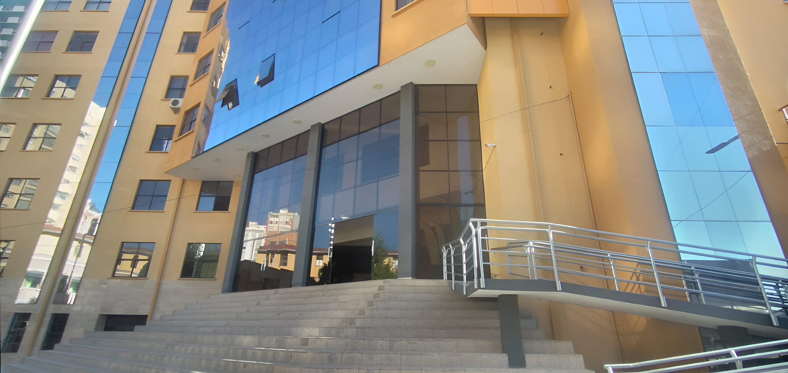

|
INFORMATICA
|

La Carrera de Informática, creada en 1973 como la primera en Bolivia en su área, tiene como objetivo la formación profesional con excelencia. Su plan curricular integra Ciencias de la Computación, Matemáticas, Sistemas y Gestión, y cuenta con el Laboratorio Superior de Informática (LASIN), equipado con tecnología de punta que ha evolucionado desde computadoras de tercera generación hasta la incorporación de Internet y software diverso.
Además, el Instituto de Investigaciones impulsa la actividad docente en líneas acordes a las demandas sociales y tecnológicas, promoviendo la inclusión y reduciendo la brecha digital. La incorporación de las TIC exige cambios en la educación superior, como cursos en línea y mejora de procesos, enfrentando la Carrera retos constantes para actualizar planes académicos y el proceso de enseñanza-aprendizaje.